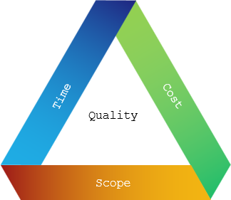
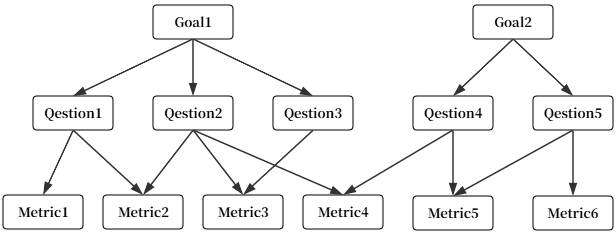

软件项目管理
SPM1. 项目执行控制过程
1.1 项目集成计划 Integrated
范围计划、进度计划、成本计划、质量计划、风险计划等等是相互联系的

集成计划内容示例参考
- 1. 导言
- 2.项目概述
- 3.项目任务范围
- 4.项目目标
- 5.项目实施策略
- 6.项目组织结构
- 7.计划结构
- 8.项目生存期
- 9.项目管理对象
- 10.项目风险分析
- 11.项目估算
- 12.项目时间计划
- 13.项目关键资源计划
- 14.项目设施工具计划
- 15.质量管理计划
- 16.配置管理计划
- 17.项目管理评审
- 18.项目度量计划
- 19.沟通计划
1.1 目的
1.2 范围
1.3 缩写说明
1.4 术语定义
1.5 引用标准
1.6 参考资料
1.7 版本更新条件
1.8 版本更新信息
1.2 平衡项目4要素 Components
- 范围 Scope
- 成本 Cost
- 进度 Time
- 质量 Quality

C = f(S, Q, T)
无法同时优化所有三个维度
- 若要加快进度，就必须增加成本或缩小范围
- 若要控制成本，就可能延长工期或降低交付标准
- 若要扩大范围，必然需要更多时间和预算
项目经理的职责，就是在三者之间寻找最优平衡点，确保项目在既定约束下达成目标
制约分析
- C 与 S 成一定正比关系
- C 与 Q 成一定的正比关系
- C 与 T 成一定的反比关系
1.3 执行控制的基本步骤 Steps
- 建立计划标准
建立项目正确完成应该达到的目标，它是确保项目能够按照项目计 划进行实施的具体执行任务的说明书，是进行过程控制的依据
- 观察项目的性能
建立项目监控和报告体系，确定为控制项目必要的数据。在项目 实施过程中，为了便于管理和控制执行情况，必须做好项目计划实施记录，掌握好项目的实 际进展情况。记录还可以为项目实施中的检查、分析、协调、控制、计划修订和总结等提供 原始资料
- 测量和分析结果
将项目的实际结果与计划进行比较，掌握计划实施情况，协调各 项工作，采取有效措施解决实施中出现的各种矛盾，调配资源以克服实施工作的薄弱环节， 努力实现项目的动态平衡，从而保证项目计划目标的实现
- 采取必要措施
如果实际的结果同计划有误差，则采取必要的纠正措施，必要时修 改项目计划。可以选用项目管理软件来协助项目执行过程
- 做好计划修订工作，控制反馈
计划不可能一成不变，当项目的内部和外部条件发 生较大变化时，项目计划就要根据实际情况进行必要的更改，以控制计划的实时有效性。如 果修正计划，应该通知有关人员和部门
1.4 效能度量 Efficiency
各部门独立运作、缺少共享的文化和存在差异、各部门之间利益冲突、轻视软件和数据管理、对数据的理解存在差异、网络隔离限制等，导致各部门之间信息无法共享共用
缺少统一规划和共享机制，最终导致数据壁垒越来越高
1.4.1 数据烟囱 Data Chimney
技术层
缺乏顶层设计和统一标准
指不同业务系统间，由于缺乏系统集成和关联操作，无法进行数据交换和通信
系统建设采用了“烟囱式”架构（各自为政、缺乏顶层设计），最终导致了数据无法互通（数据孤岛），进而引发了业务流程脱节和信息无法共享（信息孤岛）
1.4.2 数据孤岛 Isolated Data Island
数据层
逻辑上无法互通
指不同组织或部门独立收集、存储与处理数据，导致它们之间的数据产生物理或逻辑上的隔离，形成数据的孤岛
1.4.3 信息孤岛 Information Island
业务层
管理者无法看到全局真相
指不同组织或部门间信息不共享，缺乏有效的流通和管理，彼此之间形成孤立的信息单元。
1.4.4 效能竖井 Efficiency Silos
组织层
最终导致各部门各自为政，整体研发效能下降
组织内部各职能或部门各自为政、追求局部最优，却导致整体价值交付效率下降的现象
2. 软件项目度量 Measurement
计划：事前约定
度量：事后验证与持续反馈
What gets measured, gets managed.
Unless we determine what shall be measured and what the yardstick of measurement in an area will be, the area itself will not be seen.
- Drucker, P. F. (1993). People and Performance
2.1 项目度量要素 Components
- 进度度量
- 规模和工作量度量
- 成本度量
- 质量度量
- 生产力度量
- 其它
2.2 基于GQM的度量 Goal-Question-Metric
在计算机网络中，Metric 度量值是一个用于衡量和比较不同网络路径优劣的数值标准
核心作用是帮助路由器或交换机选择一条开销最小、效率最高的“最优路径”来转发数据包
通常来说，Metric 值越小，代表路径越优，优先级越高
RIP 协议将“跳数”作为衡量路径好坏的唯一 Metric 标准
RIP 协议中，Metric 的值就是跳数
更复杂的网络环境中（如 OSPF、IS-IS 等协议），Metric 的计算要复杂得多。通常将带宽、延迟等多种因素综合起来计算链路开销（Cost）作为 Metric
20世纪80年代，由美国马里兰大学的 维克多·巴希利（Victor Basili） 博士及其助手提出
层次模型 Hierarchical model，采用自上而下的方法 Top-Down approach
首先指定目标，然后编写并收集问题，最后将指标与每个问题关联
以目标为起点、以问题为桥梁、以指标为验证
不直接规定项目该做什么或花多少钱，而是通过设定目标 Goal、提出问题 Question、采集指标 Metric 来评估项目是否健康、过程是否有效、结果是否符合预期
强调度量不是孤立的数据收集，而是服务于组织战略和管理决策的结构化过程
注意和 影响地图 Impact Map 的关联

2.2.1 目标层 Goal
代表一个目标，可以是对象或实体
- 产品 Products - 软件需求规格说明（SRS），设计，程序或代码
- 流程 Processes - 测试（验证和验证），设计
- 资源 Processes - 硬件和软件
实际运用中，一个目标 Goal 应明确以下事项
- 目的 Purpose
- 一个进程（或对象）Process/Object
- 一个观点 Viewpoint
- 质量問題 Quality Issue
从项目经理的角度去评价编程工具ABC的有效性
- 目的 Purpose - 评估
- 对象 Object- 编程工具ABC
- 观点 Viewpoint - 从项目经理的角度
- 问题 Issue - 有效性
2.2.2 问题层 Question
代表问题
也称运营层或操作层
围绕目标提出一系列关键问题，用于澄清“如何达成目标”
应聚焦于过程中的瓶颈、风险点或质量短板
如，“当前版本的缺陷率是否影响用户体验？”或“开发阶段的返工比例是否在可控范围内？”
2.2.3 指标层 Metric
代表指标；量化水平
为每个问题设计可采集、可量化的数据指标，用于客观评估问题的现状和趋势
在场景中添加每个问题后，都会使用一组数据以定量方式回答问题。这组数据被称为指标
数据可以分为两种类型：
- 目标 Objective - 代码行数 LOC、模块大小、程序大小等
- 主观 Subjective - 用户满意度在1到10的评分
指标的选择需确保数据可获得、成本可控、解读无歧义
如，“每千行代码的缺陷数”、“需求变更频率”、“测试用例执行通过率”等
NASA和摩托罗拉这样的组织已经使用GQM方法来改进他们的流程，并确保按照要求实现目标
编程工具ABC的评估
- 目标： 明确为什么要进行评估（例如：为了验证工具是否提高了生产力）
- 问题： 将抽象的目标转化为具体的、可回答的问题（例如：“生产力如何？”）
- 指标： 定义用来回答这些问题的具体量化数据（例如：代码行数、缺陷数）
| 目标 | 目的 - 评估 对象 编程工具ABC 问题 有效性 观点 项目经理的观点 |
| Q1 | 当前工具的程序员或用户的生产力如何? - 生产力评估 |
| M1 | 代码行数 LOC |
| M2 | 努力 |
| M3 | 非注释或有效代码行 ELOC |
| M4 | 编程经验年数 |
| M5 | 功能点 FP |
| Q2 | 代码质量令人满意吗? - 质量评估 |
| M6 | 缺陷数量 |
| M7 | 腐坏/废弃率 |
| M8 | 缺陷年龄 |
| M1 | 代码行数 LOC |
| M3 | 非注释或有效代码行 ELOC |
| M5 | 功能点 FP |
| Q3 | 谁在使用这个编程工具? - 用户画像与采纳度 |
| M9 | 程序员比例 |
| M4 | 编程经验年数 |
| M10 | 使用软件ABC的月数 |
通过收集这些数据辅助决策以下关键商业问题
- 花钱买/开发这个工具 ABC 划算吗 - 通过对比生产力和质量数据
- 需要为这个工具提供更多培训吗 - 通过分析用户经验和缺陷率
- 这个工具适合所有项目吗 - 通过分析不同用户群体的反馈
2.3 度量技术 Technology
- GQIM（Goal-Question-Indicator-Metric）技术
- 结合统计过程控制（SPC）的度量技术
- 基于决策机制的筛选技术（德尔菲法与 PUGH 矩阵）
- 4Keys 度量技术
- P-GQIM（Process-GQIM）模型技术
- 扩展的 GQM 分析闭环技术
3. 核心计划执行控制 Core